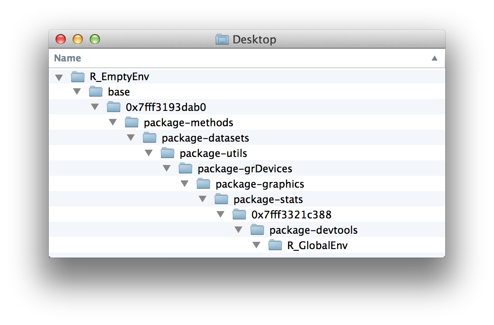
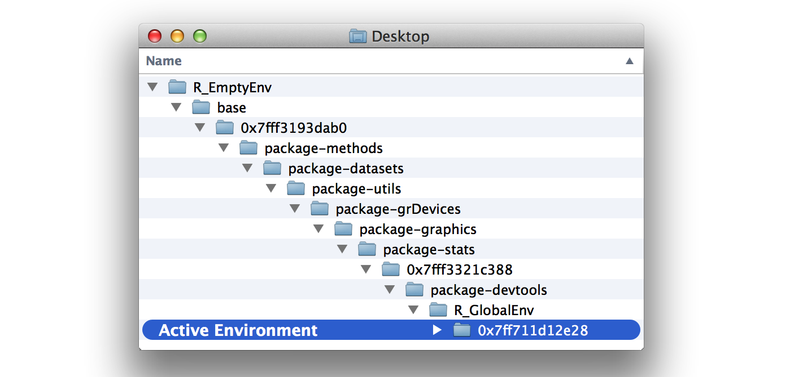
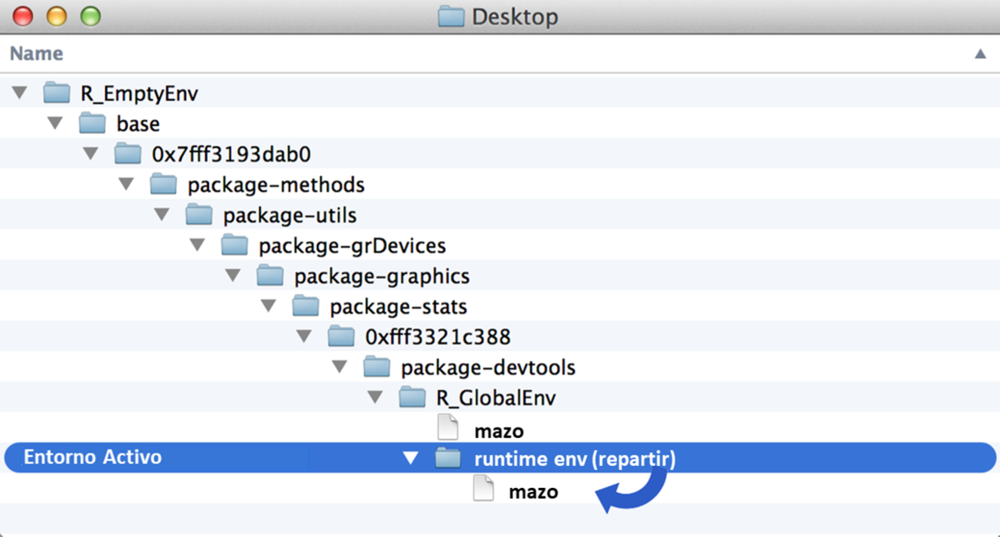
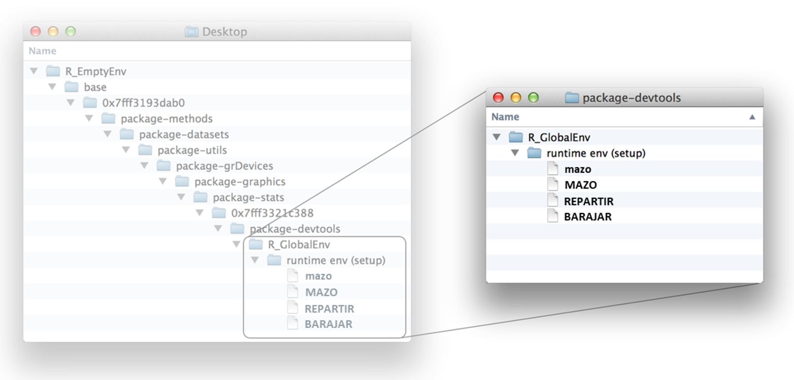
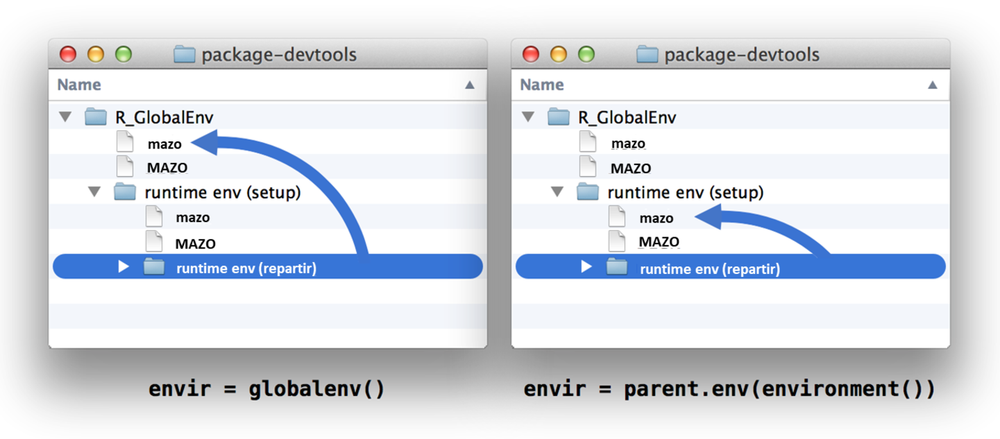

6 Entornos
Su mazo ahora está listo para un juego de blackjack (o de corazones o de guerra), pero ¿sus funciones de barajar y repartir están a la altura? Definitivamente no. Por ejemplo, repartir reparte la misma carta una y otra vez:
repartir(mazo)
## cara palo valor
## rey picas 13
repartir(mazo)
## cara palo valor
## rey picas 13
repartir(mazo)
## cara palo valor
## rey picas 13Y la función barajar en realidad no baraja el mazo (devuelve una copia del mazo que se ha barajado). En resumen, ambas funciones usan mazo, pero ninguna manipula mazo, y nos gustaría que lo hicieran.
Para corregir estas funciones, deberá aprender cómo R almacena, busca y manipula objetos como mazo. R hace todas estas cosas con la ayuda de un sistema de entorno.
6.1 Entornos
Considere por un momento cómo su computadora almacena archivos. Cada archivo se guarda en una carpeta y cada carpeta se guarda en otra carpeta, lo que forma un sistema de archivos jerárquico. Si su computadora quiere abrir un archivo, primero debe buscar el archivo en este sistema de archivos.
Puede ver su sistema de archivos abriendo una ventana del buscador. Por ejemplo, la figura Figura 6.1 muestra parte del sistema de archivos de mi computadora. Tengo toneladas de carpetas. Dentro de uno de ellos hay una subcarpeta llamada Documentos, dentro de esa subcarpeta hay una subsubcarpeta llamada ggsubplot, dentro de esa carpeta hay una carpeta llamada inst, dentro de esa subcarpeta hay una carpeta llamada doc, y dentro de eso hay un archivo llamado manual .pdf.
R usa un sistema similar para guardar objetos de R. Cada objeto se guarda dentro de un entorno, un objeto similar a una lista que se asemeja a una carpeta en su computadora. Cada entorno está conectado a un entorno principal, un entorno de nivel superior, que crea una jerarquía de entornos.
Puede ver el sistema de entorno de R con la función parenvs en el paquete pryr (tenga en cuenta que parenvs venía en el paquete pryr cuando este libro se publicó por primera vez). parenvs(all = TRUE) devolverá una lista de los entornos que utiliza su sesión de R. El resultado real variará de una sesión a otra según los paquetes que haya cargado. Aquí está el resultado de mi sesión actual:
library(pryr)
parenvs(all = TRUE)
## label name
## 1 <environment: R_GlobalEnv> ""
## 2 <environment: package:pryr> "package:pryr"
## 3 <environment: 0x7fff3321c388> "tools:rstudio"
## 4 <environment: package:stats> "package:stats"
## 5 <environment: package:graphics> "package:graphics"
## 6 <environment: package:grDevices> "package:grDevices"
## 7 <environment: package:utils> "package:utils"
## 8 <environment: package:datasets> "package:datasets"
## 9 <environment: package:methods> "package:methods"
## 10 <environment: 0x7fff3193dab0> "Autoloads"
## 11 <environment: base> ""
## 12 <environment: R_EmptyEnv> "" Se necesita algo de imaginación para interpretar este resultado, así que visualicemos los entornos como un sistema de carpetas, Figura Figura 6.2. Puedes pensar en el árbol del entorno de esta manera. El entorno de nivel más bajo se llama R_GlobalEnv y se guarda dentro de un entorno llamado package:pryr, que se guarda dentro del entorno llamado 0x7fff3321c388, y así sucesivamente, hasta llegar al entorno final de más alto nivel. R_EmptyEnv. R_EmptyEnv es el único entorno de R que no tiene un entorno principal.

Recuerde que este ejemplo es solo una metáfora. Los entornos de R existen en su memoria RAM y no en su sistema de archivos. Además, los entornos de R técnicamente no se guardan uno dentro de otro. Cada entorno está conectado a un entorno principal, lo que facilita la búsqueda en el árbol de entornos de R. Pero esta conexión es unidireccional: no hay forma de mirar un entorno y decir cuáles son sus “hijos”. Por lo tanto, no puede buscar en el árbol de entorno de R. Sin embargo, en otras formas, el sistema de entorno de R funciona de manera similar a un sistema de archivos.
6.2 Trabajar con Entornos
R viene con algunas funciones de ayuda que puede usar para explorar su árbol de entorno. Primero, puede referirse a cualquiera de los entornos en su árbol con as.environment. as.environment toma un nombre de entorno (como una cadena de caracteres) y devuelve el entorno correspondiente:
as.environment("package:stats")
## <environment: package:stats>
## attr(,"name")
## [1] "package:stats"
## attr(,"path")
## [1] "/Library/Frameworks/R.framework/Versions/3.0/Resources/library/stats"Tres entornos en su árbol también vienen con sus propias funciones de acceso. Estos son el entorno global (R_GlobalEnv), el entorno base (base) y el entorno vacío (R_EmptyEnv). Puedes referirte a ellos con:
globalenv()
## <environment: R_GlobalEnv>
baseenv()
## <environment: base>
emptyenv()
##<environment: R_EmptyEnv>A continuación, puede buscar el padre de un entorno con parent.env:
parent.env(globalenv())
## <environment: package:pryr>
## attr(,"name")
## [1] "package:pryr"
## attr(,"path")
## [1] "/Library/Frameworks/R.framework/Versions/3.0/Resources/library/pryr"Tenga en cuenta que el entorno vacío es el único entorno R sin padre:
parent.env(emptyenv())
## Error in parent.env(emptyenv()) : the empty environment has no parentPuede ver los objetos guardados en un entorno con ls o ls.str. ls devolverá solo los nombres de los objetos, pero ls.str mostrará un poco sobre la estructura de cada objeto:
ls(emptyenv())
## character(0)
ls(globalenv())
## "ahora" "barajar" "dado" "genero" "lst" "mano"
## "mazo" "mazo2" "mazo3" "mazo4" "mazo5" "millon"
## "nuevo" "repartir" "vec" El entorno vacío es, como es lógico, vacío; el entorno base tiene demasiados objetos para enumerarlos aquí; y el entorno global tiene algunas caras conocidas. Es donde R ha guardado todos los objetos que ha creado hasta ahora.
El panel de Global Environment de RStudio muestra todos los objetos en su entorno global.
Puede usar la sintaxis $ de R para acceder a un objeto en un entorno específico. Por ejemplo, puedes acceder a mazo desde el entorno global:
Y puede usar la función assign para guardar un objeto en un entorno particular. Primero dale a assign el nombre del nuevo objeto (como una cadena de caracteres). Luego dale a assign el valor del nuevo objeto, y finalmente el entorno para guardar el objeto:
Tenga en cuenta que assign funciona de forma similar a <-. Si un objeto ya existe con el nombre dado en el entorno dado, assign lo sobrescribirá sin pedir permiso. Esto hace que assign sea útil para actualizar objetos.
Ahora que puede explorar el árbol de entorno de R, examinemos cómo lo usa R. R trabaja en estrecha colaboración con el árbol del entorno para buscar objetos, almacenar objetos y evaluar funciones. La forma en que R realice cada una de estas tareas dependerá del entorno activo actual.
6.2.1 El Entorno Activo
En cualquier momento, R está trabajando en estrecha colaboración con un solo entorno. R almacenará nuevos objetos en este entorno (si crea alguno), y R utilizará este entorno como punto de partida para buscar objetos existentes (si llama a alguno). Llamaré a este entorno especial el entorno activo. El entorno activo suele ser el entorno global, pero esto puede cambiar cuando ejecuta una función.
Puede usar environment para ver el entorno activo actual:
environment()
<environment: R_GlobalEnv>El entorno global juega un papel especial en R. Es el entorno activo para cada comando que ejecuta en la línea de comandos. Como resultado, cualquier objeto que cree en la línea de comandos se guardará en el entorno global. Puede pensar en el entorno global como su espacio de trabajo de usuario.
Cuando llama a un objeto en la línea de comando, R lo buscará primero en el entorno global. Pero, ¿y si el objeto no está allí? En ese caso, R seguirá una serie de reglas para buscar el objeto.
6.3 Reglas de Alcance
R sigue un conjunto especial de reglas para buscar objetos. Estas reglas se conocen como reglas de alcance de R y ya conoce un par de ellas:
- R busca objetos en el entorno activo actual.
- Cuando trabaja en la línea de comandos, el entorno activo es el entorno global. Por lo tanto, R busca objetos a los que llama en la línea de comando en el entorno global.
Aquí hay una tercera regla que explica cómo R encuentra objetos que no están en el entorno activo.
- Cuando R no encuentra un objeto en un entorno, R busca en el entorno principal del entorno, luego en el principal del principal, y así sucesivamente, hasta que R encuentra el objeto o llega al entorno vacío.
Entonces, si llama a un objeto en la línea de comando, R lo buscará en el entorno global. Si R no puede encontrarlo allí, R buscará en el padre del entorno global, y luego en el padre del padre, y así sucesivamente, ascendiendo por el árbol del entorno hasta que encuentre el objeto, como en la Figura Figura 6.3. Si R no puede encontrar el objeto en ningún entorno, devolverá un error que dice que no se encuentra el objeto.
Recuerde que las funciones son un tipo de objeto en R. R almacenará y buscará funciones de la misma manera que almacena y busca otros objetos, buscándolos por nombre en el árbol del entorno.
6.4 Asignación
Cuando asigna un valor a un objeto, R guarda el valor en el entorno activo bajo el nombre del objeto. Si ya existe un objeto con el mismo nombre en el entorno activo, R lo sobrescribirá.
Por ejemplo, existe un objeto llamado nuevo en el entorno global:
nuevo
## "Hola Global"Puede guardar un nuevo objeto llamado nuevo en el entorno global con este comando. R sobrescribirá el objeto anterior como resultado:
nuevo <- "Hola Activo"
nuevo
## "Hola Activo"Este arreglo crea un dilema para R cada vez que R ejecuta una función. Muchas funciones guardan objetos temporales que les ayudan a hacer su trabajo. Por ejemplo, la función tirar del Proyecto 1: Dados Ponderados guardó un objeto llamado dado y un objeto llamado dados:
R debe guardar estos objetos temporales en el entorno activo; pero si R hace eso, puede sobrescribir los objetos existentes. Los autores de funciones no pueden adivinar de antemano qué nombres pueden existir ya en su entorno activo. ¿Cómo evita R este riesgo? Cada vez que R ejecuta una función, crea un nuevo entorno activo para evaluar la función.
6.5 Evaluación
R crea un nuevo entorno cada vez que evalúa una función. R usará el nuevo entorno como el entorno activo mientras ejecuta la función, y luego R volverá al entorno desde el que llamó a la función, trayendo consigo el resultado de la función. Llamemos a estos nuevos entornos entornos de tiempo de ejecución porque R los crea en tiempo de ejecución para evaluar funciones.
Usaremos la siguiente función para explorar los entornos de tiempo de ejecución de R. Queremos saber cómo son los entornos: ¿cuáles son sus entornos principales y qué objetos contienen? show_env está diseñado para decirnos:
show_env <- function(){
list(ran.in = environment(),
parent = parent.env(environment()),
objects = ls.str(environment()))
}show_env es en sí mismo una función, por lo que cuando llamamos a show_env(), R creará un entorno de tiempo de ejecución para evaluar la función. Los resultados de show_env nos dirán el nombre del entorno de tiempo de ejecución, su padre y qué objetos entorno de tiempo de ejecución contiene:
show_env()
## $ran.in
## <environment: 0x7ff711d12e28>
##
## $parent
## <environment: R_GlobalEnv>
##
## $objectsLos resultados revelan que R creó un nuevo entorno llamado 0x7ff711d12e28 para ejecutar show_env(). El entorno no tenía objetos y su padre era el entorno global. Entonces, para ejecutar show_env, el árbol de entorno de R se parecía a la figura Figura 6.4.
Ejecutemos show_env de nuevo:
show_env()
## $ran.in
## <environment: 0x7ff715f49808>
##
## $parent
## <environment: R_GlobalEnv>
##
## $objectsEsta vez show_env se ejecutó en un nuevo entorno, 0x7ff715f49808. R crea un nuevo entorno cada vez que ejecuta una función. El entorno 0x7ff715f49808 se ve exactamente igual que 0x7ff711d12e28. Está vacío y tiene el mismo entorno global que su padre.

Ahora, consideremos qué entorno usará R como padre del entorno de tiempo de ejecución.
R conectará el entorno de tiempo de ejecución de una función con el entorno en el que la función fue creada por primera vez. Este entorno juega un papel importante en la vida de la función, porque todos los entornos de tiempo de ejecución de la función lo utilizarán como padre. Llamemos a este entorno el entorno de origen. Puede buscar el entorno de origen de una función ejecutando environment en la función:
environment(show_env)
## <environment: R_GlobalEnv>El entorno de origen de show_env es el entorno global porque creamos show_env en la línea de comando, pero no es necesario que el entorno de origen sea el entorno global. Por ejemplo, el entorno de parenvs es el paquete pryr:
environment(parenvs)
## <environment: namespace:pryr>En otras palabras, el padre de un entorno de tiempo de ejecución no siempre será el entorno global; será el entorno en el que se creó la función por primera vez.
Finalmente, veamos los objetos contenidos en un entorno de tiempo de ejecución. Por el momento, los entornos de ejecución de show_env no contienen ningún objeto, pero eso es fácil de arreglar. Simplemente haga que show_env cree algunos objetos en el cuerpo de su código. R almacenará cualquier objeto creado por show_env en su entorno de ejecución. ¿Por qué? Debido a que el entorno de tiempo de ejecución será el entorno activo cuando se creen esos objetos:
show_env <- function(){
a <- 1
b <- 2
c <- 3
list(ran.in = environment(),
parent = parent.env(environment()),
objects = ls.str(environment()))
}Esta vez, cuando ejecutamos show_env, R almacena a, b y c en el entorno de ejecución:
show_env()
## $ran.in
## <environment: 0x7ff712312cd0>
##
## $parent
## <environment: R_GlobalEnv>
##
## $objects
## a : num 1
## b : num 2
## c : num 3Así es como R se asegura de que una función no sobrescriba nada que no debería. Todos los objetos creados por la función se almacenan en un entorno de tiempo de ejecución seguro y apartado.
R también pondrá un segundo tipo de objeto en un entorno de tiempo de ejecución. Si una función tiene argumentos, R copiará cada argumento en el entorno de tiempo de ejecución. El argumento aparecerá como un objeto que tiene el nombre del argumento pero el valor de cualquier entrada que el usuario proporcionó para el argumento. Esto asegura que una función podrá encontrar y usar cada uno de sus argumentos:
foo <- "llevame a tu tiempo de ejecucion"
show_env <- function(x = foo){
list(ran.in = environment(),
parent = parent.env(environment()),
objects = ls.str(environment()))
}
show_env()
## $ran.in
## <environment: 0x7ff712398958>
##
## $parent
## <environment: R_GlobalEnv>
##
## $objects
## x : chr "llevame a tu tiempo de ejecucion"Pongamos todo esto junto para ver cómo R evalúa una función. Antes de llamar a una función, R está trabajando en un entorno activo; llamemos a esto el entorno de llamadas. Es el entorno desde el que R llama a la función.
Luego llamas a la función. R responde configurando un nuevo entorno de tiempo de ejecución. Este entorno será un elemento secundario del entorno de origen de la función. R copiará cada uno de los argumentos de la función en el entorno de tiempo de ejecución y luego hará que el entorno de tiempo de ejecución sea el nuevo entorno activo.
A continuación, R ejecuta el código en el cuerpo de la función. Si el código crea objetos, R los almacena en el entorno activo, es decir, en tiempo de ejecución. Si el código llama a algún objeto, R usa sus reglas de alcance para buscarlos. R buscará el entorno de tiempo de ejecución, luego el padre del entorno de tiempo de ejecución (que será el entorno de origen), luego el padre del entorno de origen, y así sucesivamente. Tenga en cuenta que es posible que el entorno de llamada no esté en la ruta de búsqueda. Por lo general, una función solo llamará a sus argumentos, que R puede encontrar en el entorno de tiempo de ejecución activo.
Finalmente, R termina de ejecutar la función. Cambia el entorno activo de nuevo al entorno de llamada. Ahora R ejecuta cualquier otro comando en la línea de código que llamó a la función. Entonces, si guarda el resultado de la función en un objeto con <-, el nuevo objeto se almacenará en el entorno de llamada.
En resumen, R almacena sus objetos en un sistema de entorno. En cualquier momento, R está trabajando en estrecha colaboración con un único entorno activo. Almacena nuevos objetos en este entorno y utiliza el entorno como punto de partida cuando busca objetos existentes. El entorno activo de R suele ser el entorno global, pero R ajustará el entorno activo para hacer cosas como ejecutar funciones de forma segura.
¿Cómo puedes usar este conocimiento para arreglar las funciones repartir y barajar?
Primero, comencemos con una pregunta de calentamiento. Supongamos que redefino repartir en la línea de comando de esta manera:
repartir <- function() {
mazo[1, ]
}Tenga en cuenta que repartir ya no toma un argumento y llama al objeto mazo, que vive en el entorno global.
Ejercicio 8.1 (¿Funcionará repartir?) ¿Podrá R encontrar mazo y devolver una respuesta cuando llame a la nueva versión de repartir, como repartir()?
Solución. Sí. repartir seguirá funcionando igual que antes. R ejecutará repartir en un entorno de tiempo de ejecución que es un elemento secundario del entorno global. ¿Por qué será un hijo del entorno global? Debido a que el entorno global es el entorno de origen de repartir (definimos repartir en el entorno global):
environment(repartir)
## <environment: R_GlobalEnv>Cuando repartir llama a mazo, R necesitará buscar el objeto mazo. Las reglas de alcance de R lo llevarán a la versión de repartir en el entorno global, como en la Figura Figura 6.5. mazo funciona como se esperaba como resultado:
repartir()
## cara palo valor
## rey picas 13Ahora arreglemos la función repartir para eliminar las cartas que ha repartido del mazo. Recuerde que repartir devuelve la carta superior de mazo pero no elimina la carta de la baraja. Como resultado, repartir siempre devuelve la misma carta:
repartir()
## cara palo valor
## rey picas 13
repartir()
## cara palo valor
## rey picas 13Conoces suficiente sintaxis de R para eliminar la carta superior de mazo. El siguiente código guardará una copia prístina de mazo y luego eliminará la carta superior:
MAZO <- mazo
mazo <- mazo[-1, ]
head(mazo, 3)
## cara palo valor
## reina picas 12
## jota picas 11
## diez picas 10Ahora agreguemos el código a repartir. Aquí repartir guarda (y luego devuelve) la carta superior de mazo. En el medio, quita la carta del mazo… ¿o no?
repartir <- function() {
carta <- mazo[1, ]
mazo <- mazo[-1, ]
carta
}Este código no funcionará porque R estará en un entorno de tiempo de ejecución cuando ejecute mazo <- mazo[-1, ]. En lugar de sobrescribir la copia global de mazo con mazo[-1, ], repartir simplemente creará una copia ligeramente alterada de mazo en su entorno de tiempo de ejecución, como en la Figura Figura 6.6.

Ejercicio 8.2 (Sobreescribir el mazo) Vuelva a escribir la línea mazo <- mazo[-1, ] de repartir para asignar mazo[-1, ] a un objeto llamado mazo en el entorno global. Sugerencia: considere la función assign.
Solución. Puede asignar un objeto a un entorno específico con la función assign:
Ahora repartir finalmente limpiará la copia global de mazo, y podemos repartir cartas tal como lo haríamos en la vida real:
repartir()
## cara palo valor
## reina picas 12
repartir()
## cara palo valor
## jota picas 11
repartir()
## cara palo valor
## diez picas 10Volvamos nuestra atención a la función barajar:
barajar <- function(cartas) {
aleatorio <- sample(1:52, size = 52)
cartas[aleatorio, ]
}barajar(mazo) no mezcla el objeto mazo; devuelve una copia barajada del objeto mazo:
head(mazo, 3)
## cara palo valor
## nueve picas 9
## ocho picas 8
## siete picas 7
a <- barajar(mazo)
head(mazo, 3)
## cara palo valor
## nueve picas 9
## ocho picas 8
## siete picas 7
head(a, 3)
## cara palo valor
## as diamantes 1
## siete treboles 7
## dos treboles 2Este comportamiento es ahora indeseable de dos maneras. Primero, barajr falla al barajar mazo. En segundo lugar, barajar devuelve una copia de mazo, a la que pueden faltarle las cartas que se han repartido. Sería mejor si barajar devolviera las cartas repartidas a la baraja y luego se barajaran. Esto es lo que sucede cuando barajas una baraja de cartas en la vida real.
Ejercicio 8.3 (Rescribir barajr) Vuelva a escribir barajar para que reemplace la copia de mazo que vive en el entorno global con una versión barajada de MAZO, la copia intacta de mazo que también vive en el entorno global. La nueva versión de barajar no debería tener argumentos y no devolver ningún resultado.
Solución. Puede actualizar barajar de la misma manera que actualizó repartir. La siguiente versión hará el trabajo:
barajar <- function(){
aleatorio <- sample(1:52, size = 52)
assign("mazo", MAZO[aleatorio, ], envir = globalenv())
}Dado que MAZO vive en el entorno global, el entorno de origen de barajar, barajar podrá encontrar MAZO en tiempo de ejecución. R buscará MAZO primero en el entorno de tiempo de ejecución de barajar y luego en el entorno de origen de barajar, el entorno global, que es donde se almacena MAZO.
La segunda línea de barajar creará una copia reordenada de MAZO y la guardará como mazo en el entorno global. Esto sobrescribirá la versión anterior, no barajada, de mazo.
6.6 Cierres
Nuestro sistema finalmente funciona. Por ejemplo, puede barajar las cartas y luego repartir una mano de blackjack:
barajar()
repartir()
## cara palo valor
## reina corazones 12
repartir()
## cara palo valor
## ocho corazones 8Pero el sistema requiere que mazo y MAZO existan en el entorno global. Muchas cosas suceden en este entorno, y es posible que el mazo se modifique o borre por accidente.
Sería mejor si pudiéramos almacenar mazo en un lugar seguro y apartado, como uno de esos entornos seguros y apartados que R crea para ejecutar funciones. De hecho, almacenar mazo en un entorno de tiempo de ejecución no es tan mala idea.
Podrías crear una función que tome mazo como argumento y guarde una copia de mazo como MAZO. La función también podría guardar sus propias copias de repartir y barajar:
setup <- function(mazo) {
MAZO <- mazo
REPARTIR <- function() {
carta <- mazo[1, ]
assign("mazo", mazo[-1, ], envir = globalenv())
carta
}
BARAJAR <- function(){
aleatorio <- sample(1:52, size = 52)
assign("mazo", MAZO[aleatorio, ], envir = globalenv())
}
}Cuando ejecuta setup, R creará un entorno de tiempo de ejecución para almacenar estos objetos. El entorno se verá como la Figura Figura 6.7.
Ahora todas estas cosas están seguras fuera del camino en un hijo del entorno global. Eso los hace seguros pero difíciles de usar. Pidamos a setup que devuelva REPARTIR y BARAJAR para poder usarlos. La mejor manera de hacer esto es devolver las funciones como una lista:
setup <- function(mazo) {
MAZO <- mazo
REPARTIR <- function() {
carta <- mazo[1, ]
assign("mazo", mazo[-1, ], envir = globalenv())
carta
}
BARAJAR <- function(){
aleatorio <- sample(1:52, size = 52)
assign("mazo", MAZO[aleatorio, ], envir = globalenv())
}
list(repartir = REPARTIR, barajar = BARAJAR)
}
cartas <- setup(mazo)

Luego puede guardar cada uno de los elementos de la lista en un objeto dedicado en el entorno global:
repartir <- cartas$repartir
barajar <- cartas$barajarAhora puedes ejecutar repartir y barajar como antes. Cada objeto contiene el mismo código que el repartir y barajar originales:
repartir
## function() {
## carta <- mazo[1, ]
## assign("mazo", mazo[-1, ], envir = globalenv())
## carta
## }
## <environment: 0x7ff7169c3390>
barajar
## function(){
## aleatorio <- sample(1:52, size = 52)
## assign("mazo", MAZO[aleatorio, ], envir = globalenv())
## }
## <environment: 0x7ff7169c3390>Sin embargo, las funciones ahora tienen una diferencia importante. Su entorno de origen ya no es el entorno global (aunque repartir y barajar están actualmente guardados allí). Su entorno de origen es el entorno de tiempo de ejecución que creó R cuando ejecutó setup. Ahí es donde R creó REPARTIR y BARAJAR, las funciones copiadas en el nuevo repartir y barajar, como se muestra en:
environment(repartir)
## <environment: 0x7ff7169c3390>
environment(barajar)
## <environment: 0x7ff7169c3390>¿Por qué importa esto? Porque ahora, cuando ejecuta repartir o barajar, R evaluará las funciones en un entorno de tiempo de ejecución que usa 0x7ff7169c3390 como padre. MAZO y mazo estarán en este entorno principal, lo que significa que repartir y barajar podrán encontrarlos en tiempo de ejecución. MAZO y mazo estarán en la ruta de búsqueda de funciones, pero seguirán fuera del camino en todos los demás aspectos, como se muestra en la Figura Figura 6.8.
Este arreglo se llama cierre. El entorno de tiempo de ejecución de setup “encierra” las funciones repartir y barajar. Tanto repartir como barajar pueden trabajar de cerca con los objetos contenidos en el entorno circundante, pero casi nada más puede hacerlo. El entorno envolvente no está en la ruta de búsqueda de ninguna otra función o entorno de R.
Es posible que haya notado que repartir y barajar aún actualizan el objeto mazo en el entorno global. No te preocupes, estamos a punto de cambiar eso. Queremos que repartir y barajar funcionen exclusivamente con los objetos en el entorno principal (incluyente) de sus entornos de tiempo de ejecución. En lugar de hacer que cada función haga referencia al entorno global para actualizar mazo, puede hacer que hagan referencia a su entorno principal en tiempo de ejecución, como se muestra en la Figura Figura 6.9:
setup <- function(mazo) {
MAZO <- mazo
REPARTIR <- function() {
carta <- mazo[1, ]
assign("mazo", mazo[-1, ], envir = parent.env(environment()))
carta
}
BARAJAR <- function(){
aleatorio <- sample(1:52, size = 52)
assign("mazo", MAZO[aleatorio, ], envir = parent.env(environment()))
}
list(repartir = REPARTIR, barajar = BARAJAR)
}
cartas <- setup(mazo)
repartir <- cartas$repartir
barajar <- cartas$barajar

Finalmente tenemos un juego de cartas autónomo. Puedes borrar (o modificar) la copia global de mazo tanto como quieras y seguir jugando cartas. repartir y barajar utilizarán la copia protegida y prístina de mazo:
rm(mazo)
barajar()
repartir()
## cara palo value
## as corazones 1
repartir()
## cara palo valor
## jota treboles 11Blackjack!
6.7 Resumen
R guarda sus objetos en un sistema de entorno que se asemeja al sistema de archivos de su computadora. Si comprende este sistema, puede predecir cómo R buscará objetos. Si llama a un objeto en la línea de comando, R buscará el objeto en el entorno global y luego los padres del entorno global, ascendiendo en el árbol de entornos, un entorno a la vez.
R usará una ruta de búsqueda ligeramente diferente cuando llame a un objeto desde dentro de una función. Cuando ejecuta una función, R crea un nuevo entorno para ejecutar comandos. Este entorno será un elemento secundario del entorno donde se definió originalmente la función. Este puede ser el entorno global, pero también puede no serlo. Puede usar este comportamiento para crear cierres, que son funciones vinculadas a objetos en entornos protegidos.
A medida que se familiarice con el sistema de entorno de R, puede usarlo para producir resultados elegantes, como lo hicimos aquí. Sin embargo, el valor real de comprender el sistema de entorno proviene de saber cómo las funciones de R hacen su trabajo. Puede usar este conocimiento para descubrir qué está fallando cuando una función no funciona como se esperaba.
6.8 Resumen del Proyecto 2
Ahora tiene control total sobre los conjuntos de datos y los valores que carga en R. Puede almacenar datos como objetos de R, puede recuperar y manipular valores de datos a voluntad e incluso puede predecir cómo R almacenará y buscará sus objetos en la memoria de tu computadora.
Es posible que aún no se dé cuenta, pero su experiencia lo convierte en un poderoso usuario de datos aumentados por computadora. Puede usar R para guardar y trabajar con conjuntos de datos más grandes de los que podría manejar de otra manera. Hasta ahora solo hemos trabajado con mazo, un pequeño conjunto de datos; pero puede usar las mismas técnicas para trabajar con cualquier conjunto de datos que quepa en la memoria de su computadora.
Sin embargo, el almacenamiento de datos no es la única tarea logística a la que se enfrentará como científico de datos. A menudo querrá realizar tareas con sus datos que son tan complejas o repetitivas que son difíciles de realizar sin una computadora. Algunas de las cosas se pueden hacer con funciones que ya existen en R y sus paquetes, pero otras no. Serás el más versátil como científico de datos si puedes escribir tus propios programas para que los sigan las computadoras. R puede ayudarte a hacer esto. Cuando esté listo, Project 3: Máquina Tragamonedas le enseñará las habilidades más útiles para escribir programas en R.